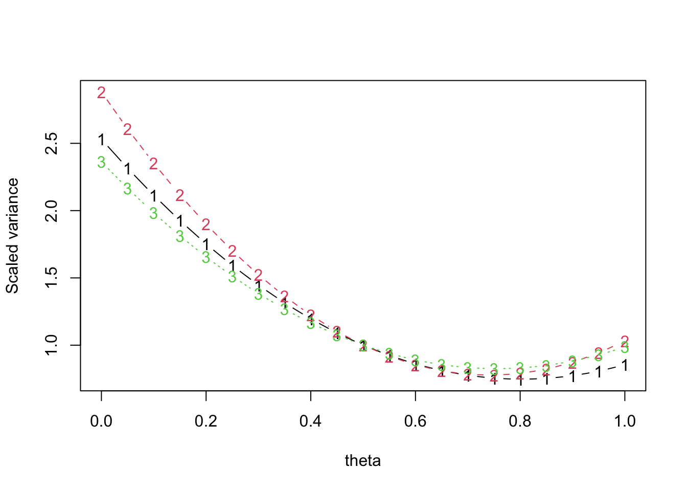
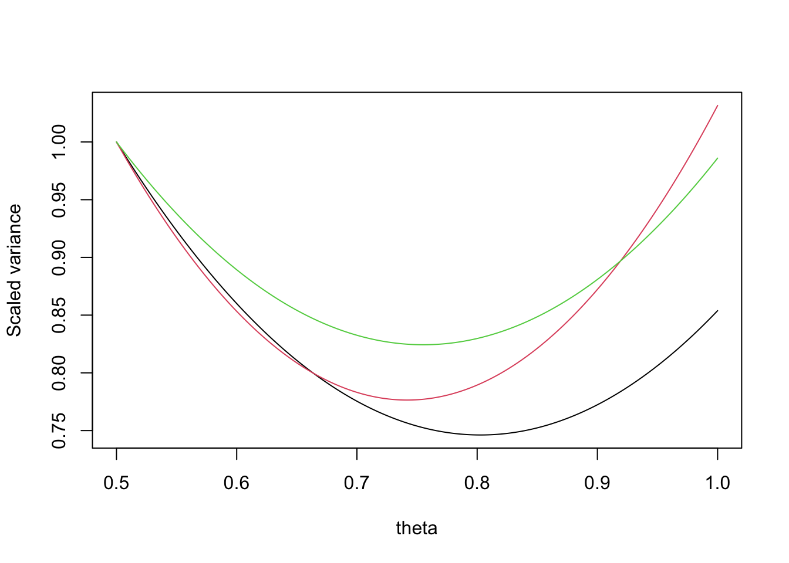
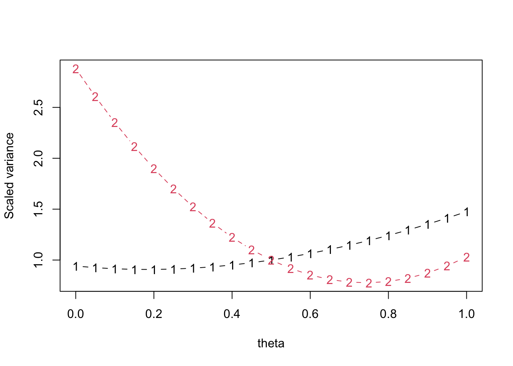

In dual-frame sampling you take two samples from overlapping sampling frames and you need to downweight people who could have been chosen in either frame so the overlap of the two frames isn’t counted twice.
Suppose you have some constant value \(\theta\) to do the downweighting, so that people in the overlap who were sampled from frame \(A\) get their weight multiplied by \(\theta\) and people in the overlap who were sampled from frame \(B\) get their weight multiplied by \((1-\theta)\). How do you choose \(\theta\)?
A traditional method when estimating totals is to work out what value of \(\theta\) would minimise (your estimate of) the variance of the the estimated total. The problem is that you might want to estimate more than one total or summaries other than totals, and you will sometimes want to use the same \(\theta\) for all of them – eg, maybe in Table 1 of a report, or in a a set of nested regression models.
The reason for minimising the estimated variance of the total is that it’s tractably analytically. We don’t care about that so much these days. We can just try a grid of values of \(\theta\) and see how the variances of our estimators of interest change.
For example, here’s data from the Frames2 package that are documented to come from landline and mobile phone surveys of some undisclosed city. They’re now in the survey package as well. Rather than specifying design meta-data as one usually does, the authors provided pairwise sampling probability matrices. First I’ll set up survey design objects for the two frame samples
suppressMessages(library(survey))
data(phoneframes)
A_in_frames<-cbind(1, DatA$Domain=="ab")
B_in_frames<-cbind(DatB$Domain=="ba",1)
Bdes_pps<-svydesign(id=~1, fpc=~ProbB, data=DatB,pps=ppsmat(PiklB))
Ades_pps <-svydesign(id=~1, fpc=~ProbA,data=DatA,pps=ppsmat(PiklA))Now we combine them into a dual-frame object, using \(\theta=0.5\), just to pick a number
mf_pps<-multiframe(list(Ades_pps,Bdes_pps),
list(A_in_frames,B_in_frames),theta=0.5) We have three main variables that were measured in both frame samples: Lei (leisure expenditure), Feed (food expenditure), and Clo (clothing expenditure). If we wanted to estimate population totals for these variables, what values of \(\theta\) would be optimal? Is there a good compromise value or is there substantial benefit in using different values?
mf_opt<-reweight(mf_pps,
totals=list(~Feed,~Lei, ~Clo))
plot(mf_opt)
It doesn’t matter a lot which variable we optimise for. The best value of \(\theta\) is about 0.8. We can get the three minima with coef
coef(mf_opt)## [1] 0.80 0.75 0.75The default optimisation grid has only twenty points on it, but we can change that if we want
mf_opt<-reweight(mf_pps,
totals=list(~Feed,~Lei, ~Clo),
theta_grid=seq(0.5,1,length=200))
plot(mf_opt, type="l", lty=1)
coef(mf_opt)## [1] 0.8040201 0.7412060 0.7562814(The plot method takes the graphics options of matplot)
These are pretty good estimates of the separate minima, too: Frames2::Hartley gives 0.8028, 0.7417, and 0.7552.
It’s not always this easy. We might also be interested in means, not just totals. Means are slightly more complicated in survey statistics than in most settings because the denominator is also random and typically correlated with the numerator. The reweight function lets you supply arbitrary variance targets, so we can ask for the mean and total of Lei
mf_opt2<-reweight(mf_pps,
targets=list(quote(vcov(svymean(~Lei, design=.DESIGN))[1,1]),
quote(vcov(svytotal(~Lei,.DESIGN))))
)
plot(mf_opt2)
These are very different. The variance of the mean is much less sensitive to \(\theta\), but the optimal value is around 0.2 rather than around 0.8. That’s because of the correlation between the numerator and denominator, which increases at lower values of \(\theta\) in this dataset.
If we want both means and totals we have to make a decision about tradeoffs: do we use different \(\theta\) for the two (which is an interpretability issue), or do we optimise for one or the other, or do we try to pick a compromise value. The graphics at least make the issues clear.